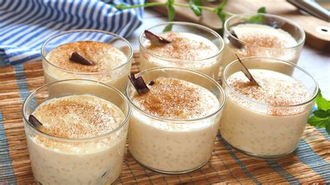
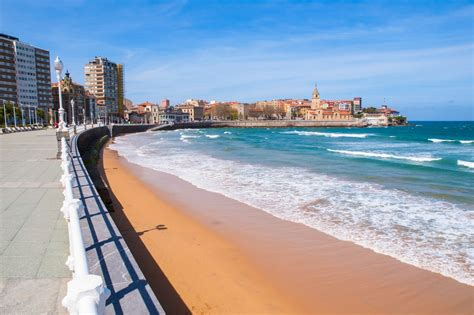
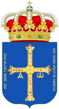

Asturias
Overview
Asturias is an autonomous region in northwestern Spain known for its lush green landscapes, dramatic coastline, and rugged mountains. Often referred to as “Green Spain,” it boasts a rich Celtic heritage, charming fishing villages, and a strong tradition of cider-making. Its capital is Oviedo, with the coastal city of Gijón also being a cultural hub.
Quick Facts
- Capital: Oviedo
- Regional Language: Spanish
- Population: ~1 million
- Famous For: Cider, Pre-Romanesque architecture, rugged coastlines
- Fun Fact: Asturias is known for its dramatic cliffs and the Picos de Europa mountain range!
Popular Dishes
Fabada Asturiana

Cachopo
Queso Cabrales

Sidra Asturiana

Famous Landmarks
Covadonga Sanctuary

Santa María del Naranco

Cudillero

Picos de Europa

Gijón Beaches

Best Time to Visit
The best time to visit Asturias is in summer (June–September) when the weather is warm and the region’s natural beauty is at its peak. It’s perfect for hiking, coastal visits, and local festivals.
Regional Symbols
- Flag:
- Coat of arms: 